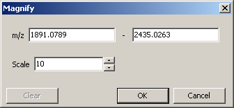
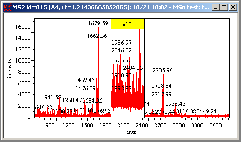

The selected range of a spectrum can be magnified along the Y-axis.
While a spectrum is displayed in Single display mode, right-click at one end of the range on a spectrum and drag to the other end.
Note:
The mouse pointer appears as .
Click in the plot area as shown below and drag.

The context menu appears.

Select [Magnify].
The Magnify dialog appears.
Edit the values and click [OK].
